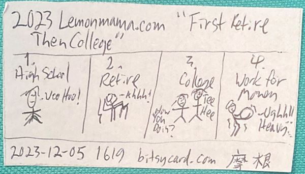

BPTB #0003 - Remix： “First Retire Then College”
I want folks, like kids, to retire first, then go to college. If they want to. No, seriously. I'm envisioning this for all of the following people: My kids, myself when I was a kid, and anyone else as a kid. Envision that each kid has an investment that flows to them ₷¤365 silver-bams per year. And that ₷¤365 silver bams covers just only basic expenses like food, housing, etc. And so the can just retire, if they live frugally. Before they ever worked a day necessarily. If they want to. I know some folks will say "Boo! Spoiled! Trust fund baby!" I say that’s not necessarily a bad thing, because now the kid is retired. And so now in their early early retirement, they can pursue anything they want for example they can go to college first thing. No one says a retired person can't go to college. And then after they go to college, they can get a job and work for money. No one says a retired person can't get a job and work for money. In other words if I'm savvy enough, even if I'm a kid, I can still have a normal life including going to college and getting a job, and yet be retired at the same time. Obviously this would be the smart way to do things if a kid can do so. If the kid wants to do so. But I know life gets in the way and life happens. So maybe this way won’t work for everyone. Plus the kid has to surf frugality ongoing to make this happen. And that’s not for everyone. However, and in conclusion, I say one way to do college and retirement, is to first retire then go to college. Audio Podcast link: https://open.substack.com/pub/lemonmama/p/audio-for-bptb-0003-first-retire The bitsycard for sale on ebay: N/A Image of the bitsycard:  2023-12-05 1619 By author lemonmama on lemonmama.com/lemonmama This here blog post copies and reuses ideas from this other blog post: First Retire Then College ~~~ Copyright © individual authors. Also Open Source Copyright per https://github.com/mjassen/lemonmama.com/ [...] blob/main/LICENSE Affilate statement: The authors may have interest, and or may be earning commissions, with companies or products mentioned on this blog. Independent non-affiliate statement: Products or companies mentioned on this blog may be unaffiliated with this blog; without any sponsor relationship.
{kind=link}